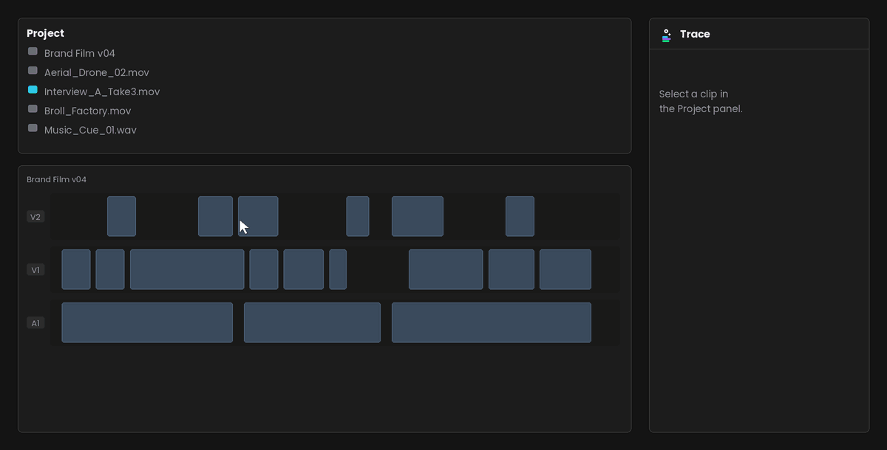
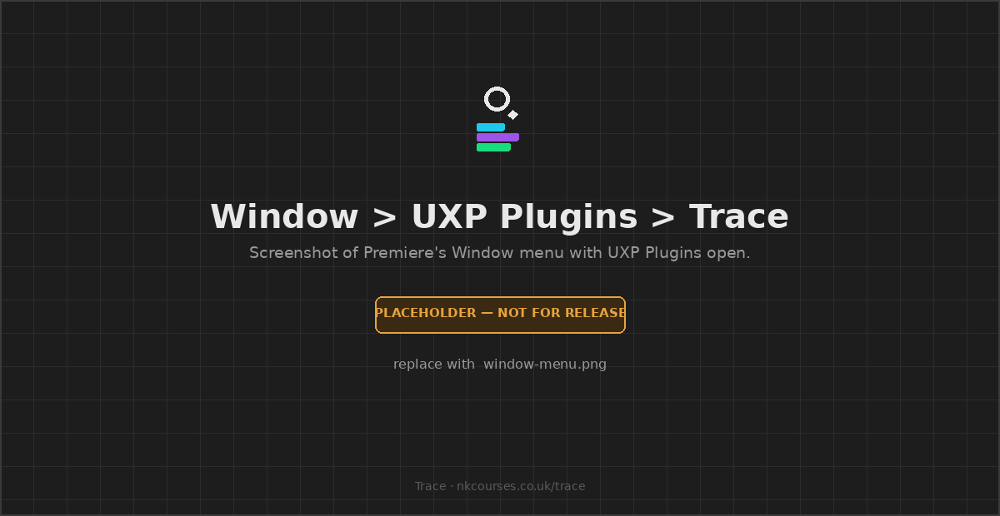
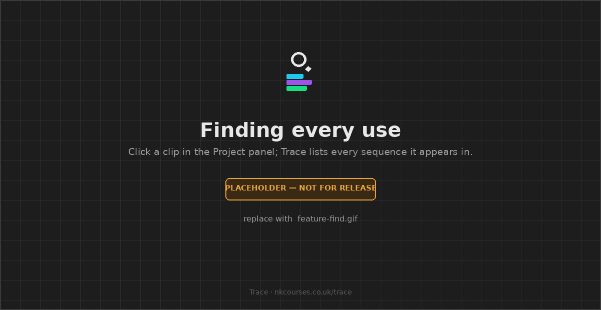
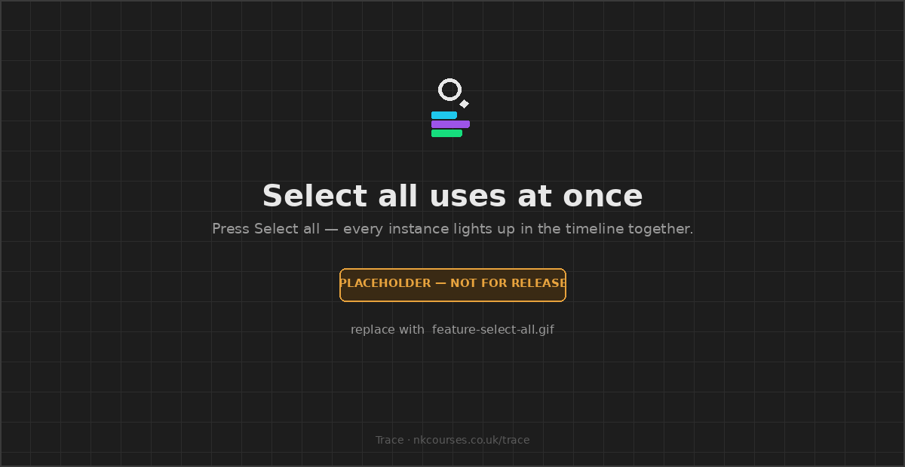
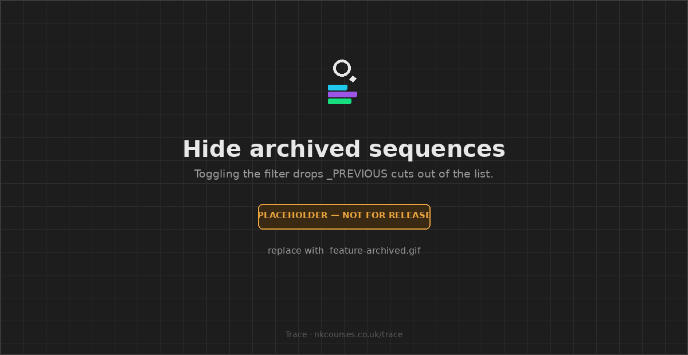
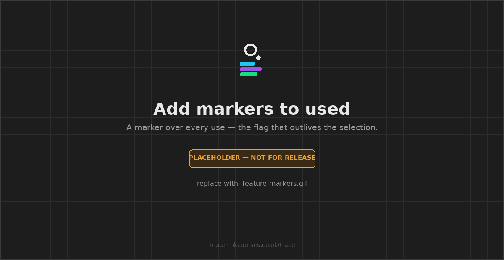
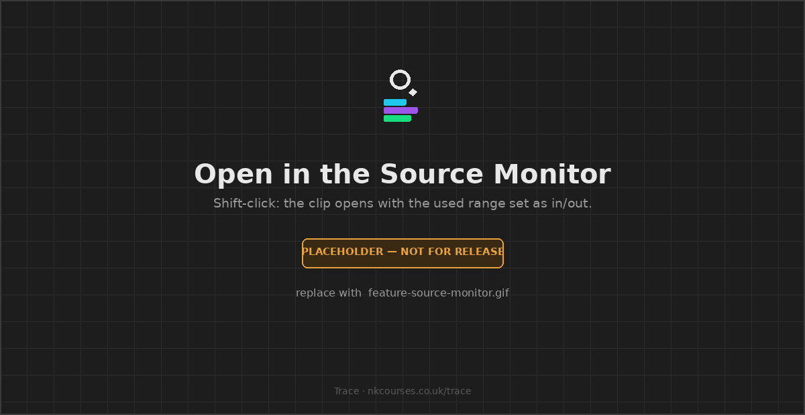
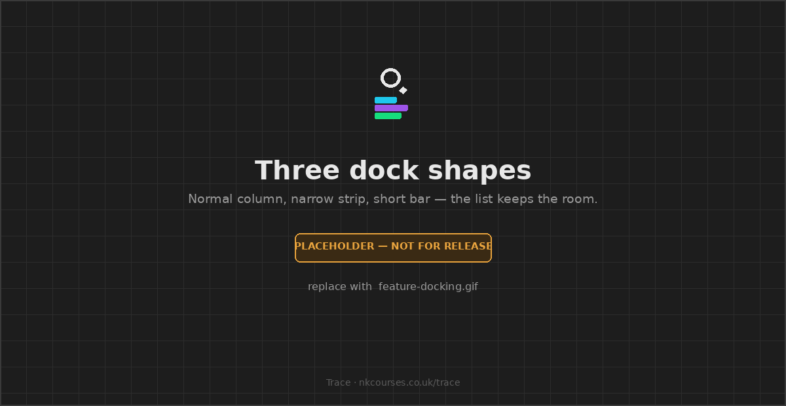
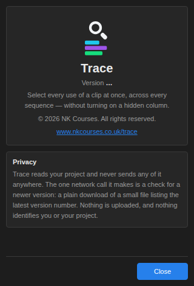

Trace
Pick one clip. See every place it is used across your entire project — then select every instance at once, which Premiere has never been able to do.

Overview
Click a clip in the Project panel and Trace shows every place it is used — which sequences, which timecodes, how long, and how much of the source you have actually touched. Then one button selects every instance in the timeline at once.
The part that matters most: a selection is not a list. Once nine uses are selected they are a real Premiere selection — nudge them, delete them, apply an effect, colour them. Everything else that answers "where is this clip?" hands you a list and makes you visit the entries one at a time.
Premiere can already find your clips. The Video Usage column does it, and Sequence Index (26.2) lists what is in one sequence. Both are good, and Trace does not replace either.
What neither can do is select every instance simultaneously, give you a total, resolve through nested sequences, or ignore your archived versions. That is the whole of what Trace is for.
What Trace is not
Trace answers one question — where is this clip used? — and it is worth being blunt about everything it deliberately isn't, so you know inside a minute whether it is the tool you want.
| It is not | What you actually want |
|---|---|
| A media manager | Trace never moves, renames, copies, consolidates or deletes a single file. It reads. |
| An unused-media finder | Trace answers about the clip you selected. "What in this project is used nowhere?" is a different question — that is Trace+. |
| A duplicate finder | It shows repeats of one clip, not every duplicated asset in the project. Also Trace+. |
| A project archiver or trimmer | It will not shrink your project folder or collect only the used media. Trace+. |
| A reporting or export tool | No CSV, no PDF, no cue sheet. Copy list puts plain text on the clipboard, and that is the whole of it. |
| A search tool | You cannot type a filename into Trace. It follows what you select, on purpose — nothing to configure and nothing to learn. |
| A replacement for the Video Usage column | A different question, not a better version of the same one. Use both. |
| Something that edits for you | It moves the playhead and makes selections. Only if you ask does it add markers or set in/out points. It never cuts, trims or ripples. |
| A subscription, or a trial | Free. No account, no key, no sign-in, no expiry, nothing to cancel. |
It is also not a panel most people open every day. It earns its place on the days you inherit someone else's project, hunt a clip you know you used somewhere, or need to know what a forty-minute interview actually gave you.
Requirements
| Premiere Pro | 25.6 or newer. Check under
Premiere Pro > About Premiere Pro. Earlier versions cannot run it — Trace uses
Adobe's current plugin system (UXP), and there is no build for older releases. |
|---|---|
| System | macOS or Windows. |
| Licence | None. Trace is free, with no account and no key. |
Install
- Download
Trace.ccxand double-click it. Creative Cloud Desktop installs it for you — nothing to unzip. - Quit Premiere Pro and open it again. Premiere only looks for new panels at startup.
- Window > UXP Plugins > Trace.
That is all of it. There is no third step where you paste a key.

Double-clicking did nothing? Open Creative Cloud Desktop first, then double-click the file again. If Creative Cloud is not installed, use the free ZXP/UXP installer instead.
Quick start
- Open a project and dock Trace anywhere you like.
- Click a clip in the Project panel. Trace scans the project once — a few hundred milliseconds on a normal job — then answers instantly from then on.
- Click any row to jump the playhead to that use.
- Press Select all N in this sequence to light up every use at once.
With nothing selected, Trace waits. That is the whole loop; everything below is detail.
One clip at a time
Trace answers about the clip you select, and nothing else. There is no view to switch, no mode, no setting. Click a clip, a subclip, an audio file or a sequence in the Project panel and Trace shows every place it is used. Click away and it waits.
That is the whole shape of it, and it is deliberate: a panel that only ever answers one question needs no explaining. If you want the same answer for many clips at once — what a whole sequence reuses, what the whole project no longer needs — that is Trace+.
A sequence counts as a clip. Select one and Trace tells you where that sequence is nested, the same way it would for any other item.
Finding every use of a clip
Select a clip and Trace answers with a total line — 9 uses · 4 sequences · 3m 12s — and then the detail: every sequence it appears in, and inside each one, every use with its timecode, its duration and which track it sits on.

Audio and video that were shot together and are cut together count as one use, not two. Trace pairs them when they overlap by more than half, so a J-cut stays one use and two back-to-back edits stay two.
The list updates as you edit. Add a clip, delete one, or move something, and Trace re-scans on its own within a few hundred milliseconds. ☰ > Re-scan project forces it immediately if you would rather not wait.
Selecting uses in the timeline
This is the thing nothing else does. Press Select all N in this sequence and every use becomes a real Premiere selection at the same moment — ready to nudge, delete, label, or drop an effect onto.

For a subset, tick the box beside any use, or Cmd-click (Ctrl on Windows) the row. Ticked rows fill in so the panel and the timeline always agree.
A selection cannot span two sequences — that is Premiere, not Trace. Ticking a use in a different sequence replaces your picks rather than adding to them, and the status line says so when it happens.
Stepping through uses
The arrows at the bottom walk the playhead through every use on screen, in order, jumping between sequences as needed. The counter between them tells you where you are — 3 / 9. Clear drops the selection and the picks.
Every gesture
| Do this | Get this |
|---|---|
| Click a use | Jump the playhead there and select that clip |
| Shift-click, or double-click | Open in the Source Monitor, with that use set as in/out |
| Cmd / Ctrl-click, or the tick box | Add or remove from the selection |
| Alt-click | Copy the clip's name, to paste into the Project panel's search box |
| The arrows | Step through every use on screen |
Shift and double-click do the same thing deliberately, so the Source Monitor is reachable whichever one you reach for.
Nested sequences
If a clip lives inside a nest and that nest is cut into a master, Trace reports
both — the use inside the nest, and where it lands in the master, labelled
via <nest name>. Native reports the first and never mentions the second, which
is the sequence you are actually working in.
| Nest trimmed past the use | Not reported. The master genuinely does not contain it, and a wrong number is worse than a missing one. |
|---|---|
| Retimed nest | Mapped, divided by the speed, and marked ~ with a note under the totals. |
| Reversed nest | Not mapped at all. The arithmetic depends on where the reversal's boundaries sit, and guessing would be a confident lie. |
| Nest inside a nest | Followed, to six levels, with a guard against a sequence that somehow contains itself. |
Subclips and duplicate imports
Selecting a master clip also finds uses of its subclips, matched on the shared media file. Those rows are labelled with the name of the item they came from.
Trace cannot tell a subclip from a second import of the same file — Premiere exposes no API for that relationship — so it does not claim to. Rows say same media file and name the item, rather than saying subclip.
Merged and multicam clips
The component clips inside a merged clip, and the angles inside a multicam clip, are not resolved. When you select one, Trace says so in the line under the totals rather than quietly reporting a number that is too low.
Merged clips cannot be resolved by any plugin. Premiere exposes
isMergedClip() — enough to know that it is one — and nothing at all for reading the
sources inside it. Adobe's own answer, on the record: "There are no ExtendScript APIs around
multi-cam, and there never will be." The same gap covers merged clips, and no workaround has
ever been produced.
Multicam is a maybe. A multicam source appears in the project as a sequence, so its angles may be reachable that way. That is an untested route, not a promise — and even if it works, nothing exposes which angle a clip is currently switched to.
Archived sequences
If you keep old cuts in a _PREVIOUS, _ARCHIVE or _OLD
bin — as VersionUp creates — every native usage
list is full of them, and there is no way to filter them out.

Trace hides them by default and tells you how many it is hiding. Untick to see them; the tick box stays on screen either way, so it is a switch and not a trapdoor.
A Community Expert confirmed on the Adobe forums that native Premiere cannot do this. It is a small feature that only exists because the person who built Trace also built a versioning tool and got tired of the noise.
Adding markers
☰ > Add markers to used drops a marker over every use in the list. Unlike a selection, a marker survives you clicking somewhere else — it is the persistent version of "highlight every use".

It is one undo step per sequence, not one for the lot, and Trace tells you how many before you press it. Markers across four sequences is four presses of Cmd+Z.
The Source Monitor
Shift-click or double-click any use to open that clip in the Source Monitor with the used section marked as in and out points, so you are looking at exactly the stretch Trace is describing.

This changes your project. In and out points on a clip are what you get when you drag it into a timeline afterwards, so setting them is a real edit — one Cmd+Z to undo, and Trace says so in the status line when it happens.
Markers and this are the only two things Trace ever writes. Everything else it does is a read.
Copying the list
☰ > Copy list puts what is on screen on the clipboard as plain text — sequence names, timecodes and durations — for an email, a note, or a message to whoever asked you where that clip went. There is no CSV and no report file; if you need one of those, see Trace+.
Docking
Trace adapts to the space it is given, with nothing to configure.

| A normal column | Everything: totals, the bin path, filters, the status line. |
|---|---|
| A narrow strip | Drops the duration column. The timecode still says where and the track still says which. |
| A short bar under the timeline | Drops the bin path, the filters and the status line so the list keeps the height. |
Updates and About
Trace checks once a day whether a newer version exists and shows a small notice in the panel if so. ☰ > Check for updates asks immediately.
☰ > About Trace shows the version you are running — the first thing to quote if you report a problem — along with a link back to this site.

Release history
Loading releases…
What Trace can't do
Not oversights. Premiere's plugin API genuinely does not offer these, and no plugin can do them.
| Why | |
|---|---|
| Reveal a clip in the Project panel | The Project panel selection is read-only to plugins, and Premiere's own Reveal in Project command cannot be triggered either — Adobe segregates plugins from the main window's UI and keyboard handling deliberately. Trace shows the bin under the clip name, and Alt-click copies the name to paste into the search box. |
| Colour or tint clips in the timeline | Colour labels are project-item only. Selection and markers are the two visual channels a plugin gets. |
| Zoom or scroll the timeline | No API. Moving the playhead is the only navigation, and Premiere scrolls to follow it. |
| Resolve merged clips | Nothing exists for reading the sources inside one. See above. |
| Have a keyboard shortcut | Premiere does not support shortcuts for UXP plugins, and Adobe confirmed in April 2026 that none is planned. |
| Search other or unopened projects | The API cannot reach a project that is not open. Productions are out for the same reason. |
| Park the Source Monitor on the exact frame | Needs Premiere 26.3. Trace marks the used range as in/out instead, which shows you more. |
Troubleshooting
Trace isn't in the Window menu
Restart Premiere after installing — it only looks for new panels at startup. Then check Window > UXP Plugins, not Window > Extensions. If it is still missing, confirm you are on 25.6 or later under Premiere Pro > About Premiere Pro.
Double-clicking the .ccx did nothing
Creative Cloud Desktop has to be installed and signed in. Open it first, then double-click the file again. If you do not have it, use the free ZXP/UXP installer.
It says 0 uses and I know I used that clip
Three things do this, in order of likelihood:
- The uses are in archived sequences. Untick Hide archived sequences.
- It is a merged or multicam clip. Trace flags this under the totals — see above.
- The sequence has never been opened in this session. Press ☰ > Re-scan project.
The numbers look out of date
Trace re-scans on its own as you edit, but ☰ > Re-scan project forces it. If a forced re-scan changes the answer, that is worth telling me about.
Clicking a row moved the playhead but selected nothing
Almost always means the clip has been trimmed or moved since the last scan. Re-scan and try again.
The panel is squashed or the buttons overlap
Drag the dock wider or taller. Trace drops columns as it narrows, but below roughly 180px there is nothing left to give up.
Trace+
Both search your whole project. The difference is how many clips they answer for.
| Trace | Trace+ | |
|---|---|---|
| You give it | One clip | Nothing, a sequence, or the project |
| It answers for | That clip, everywhere | Many clips at once |
| The question | Where is this used? | What is reused, what is used nowhere, what can go |
| Depth | The list | The list plus the analysis — coverage, totals, archive weight |
So Trace+ is not "Trace with a bigger search". Trace already searches everything. Trace+ asks a
different question — one clip at a time versus all four hundred at once — and then
does something about the answer: files the unused media into _UNUSED, tells you what
your archive would weigh without it.
Trace+ has everything Trace has, and more. Nothing you learn in Trace is wasted, and nothing you can do here disappears there. The deeper reading of a single clip — the source coverage bar, which draws the whole clip with the used parts filled in and tells you the longest stretch you have never touched — is a Trace+ feature.
It is not a paid tier of this panel and Trace is not a trial for it. Trace is free, complete and finished. Join the list if you want to hear when Trace+ is ready.
Support
support@nkcourses.co.uk. Quote the version number from ☰ > About Trace and say what you selected and what you expected — that is usually enough to find it. I am one person, so it might take a day, but it will be me answering.